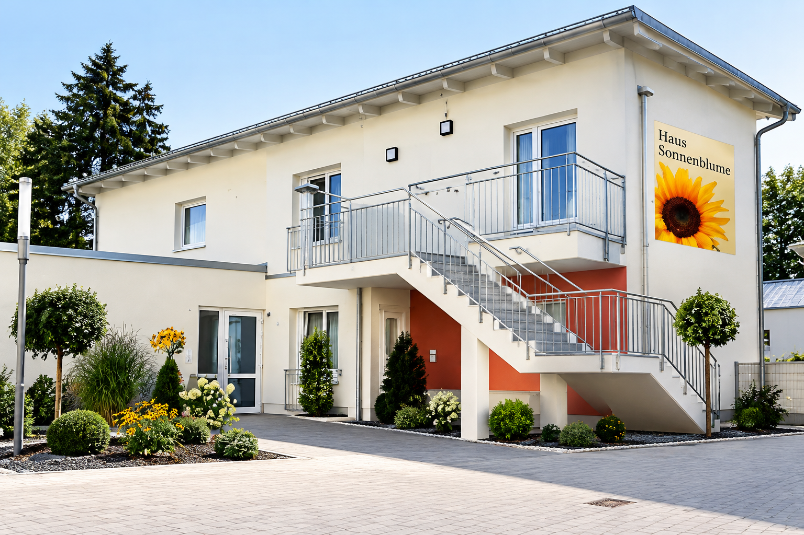
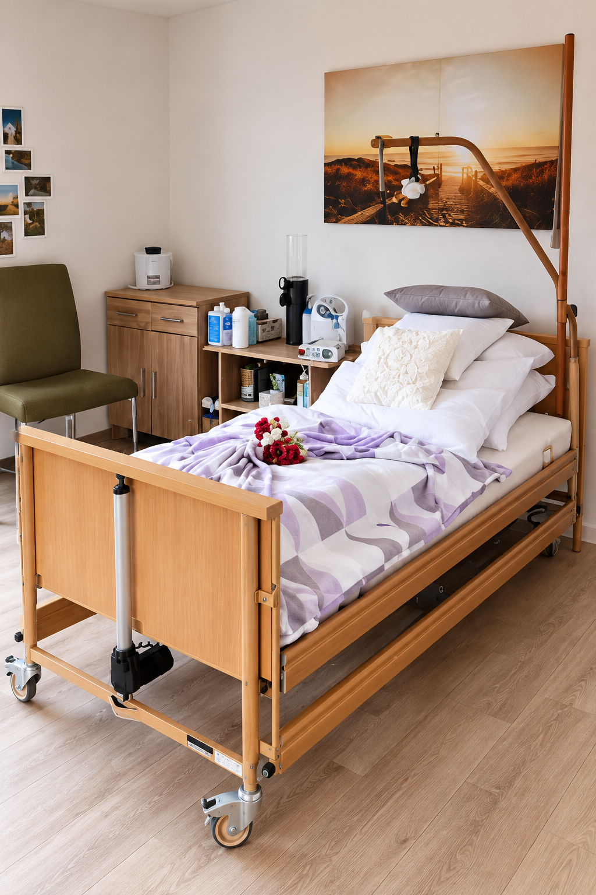

Menschlichkeit
Der Mensch und seine individuellen Bedürfnisse stehen im Mittelpunkt.
Pflegedienst GRATIA GmbH
Professionelle Pflege, medizinische Kompetenz und menschliche Nähe in vertrauter Umgebung.
Was uns wichtig ist
Bei der GRATIA GmbH für die Außerklinische Intensivpflege und Heimbeatmung steht der Mensch im Mittelpunkt unseres Handelns.
Jeder Mensch ist einzigartig und besitzt individuelle Bedürfnisse, Wünsche und eine eigenständige Lebensgeschichte.
Mit unserer medizinischen Versorgung in der häuslichen Umgebung oder in unseren Wohngruppen ermöglichen wir unseren Patientinnen und Patienten ein würdevolles und selbstbestimmtes Leben in vertrauter Umgebung.
Wir stehen für Fürsorge mit Herz, Fachkompetenz mit Verantwortung und eine wertschätzende Begleitung.
Der Mensch und seine individuellen Bedürfnisse stehen im Mittelpunkt.
Qualifizierte Mitarbeiter sorgen für eine professionelle und sichere Versorgung.
Vertrauen, Verlässlichkeit und respektvolle Kommunikation bilden unsere Grundlage.
Verantwortung & Erfahrung
Wir, die Inhaber und Geschäftsführung, tragen gemeinsam die Verantwortung für eine qualitativ hochwertige Pflege.
Unsere langjährige Erfahrung in der außerklinischen Intensivpflege verbinden wir mit einem tiefgehenden Verständnis für die verschiedensten Lebenssituationen unserer Klientinnen und Klienten.
Dabei stehen fachliche Kompetenz, organisatorisches Verantwortungsbewusstsein und ein hohes Maß an Empathie im Mittelpunkt unseres Handelns.
Die GRATIA GmbH steht für Pflegedienstleistungen mit hohen Qualitätsstandards.
Die kontinuierliche Weiterentwicklung unseres Pflegestandards sowie die Förderung und Qualifizierung unseres Pflegeteams sind wichtige Bestandteile unserer Arbeit.
Wohnen mit Sicherheit und Würde

Mit der Eröffnung des Hauses Sonnenblume im Jahr 2016 schuf die GRATIA GmbH in Kolitzheim ein speziell auf die Anforderungen und Bedürfnisse der außerklinischen Intensivpflege ausgerichtetes Zuhause.
Die barrierefreie und moderne Wohnanlage bietet intensivpflegebedürftigen Menschen ab dem 18. Lebensjahr eine familiäre, sichere und würdevolle Heimat.
Die Wohngemeinschaft befindet sich zentral in Kolitzheim zwischen Schweinfurt und Würzburg.

Professionelle medizinische Versorgung
Die Wohngemeinschaften im Haus Sonnenblume, Kolitzheim, wurden speziell für Menschen mit außerklinischem Intensivpflegebedarf geschaffen.
Wir verbinden eine hochwertige medizinische Versorgung mit einer ruhigen und familiären Atmosphäre.
Die Wohneinheiten sind individuell auf die Bewohnerinnen und Bewohner abgestimmt und bieten ein vertrautes Zuhause.
Die ambulant betreuten Wohngemeinschaften werden rund um die Uhr von qualifiziertem Pflegepersonal begleitet und betreut.
Auch bei Ihnen zu Hause
Darüber hinaus bieten wir die außerklinische Intensivpflege im häuslichen Umfeld an.
Unsere qualifizierten Mitarbeiter betreuen Patientinnen und Patienten in ihrem eigenen Zuhause und ermöglichen dadurch eine kontinuierliche und individuelle Versorgung.
Erfahrung und Kompetenz
Getragen wird diese hohe Qualität vor allem von unseren qualifizierten Mitarbeitenden.
Unsere Teams verfügen über langjährige Erfahrungen in der Pflege, insbesondere in den Bereichen Gesundheits- und Krankenpflege, Altenpflege, Atemtherapie sowie Anästhesie- und Intensivpflege.
Unsere Mitarbeitenden verfügen über eine fundierte Zusatzausbildung im Bereich der außerklinischen Intensivpflege.
Mehr als Pflege
Um Ihnen ein ganzheitliches Leistungsspektrum zu bieten, gehen wir weit über das Kerngeschäft hinaus. Unsere Zusatzleistungen sollen Ihren Alltag erleichtern und eine höhere Lebensqualität ermöglichen.
An- und Verkauf von Gold, Silber und weiteren Wertmetallen sowie Schmuck und Antiquitäten.
Unterhaltsreinigungen sowie Grund- und Sonderreinigungen für private und gewerbliche Kunden.
Unterstützung bei Haushaltsauflösungen, Wohnungsräumungen und Entsorgung.
Anwendungen zur Entspannung und zur Förderung des allgemeinen Wohlbefindens.
Reparaturen, Sanierungen und Umbauten von der Planung bis zur Umsetzung.